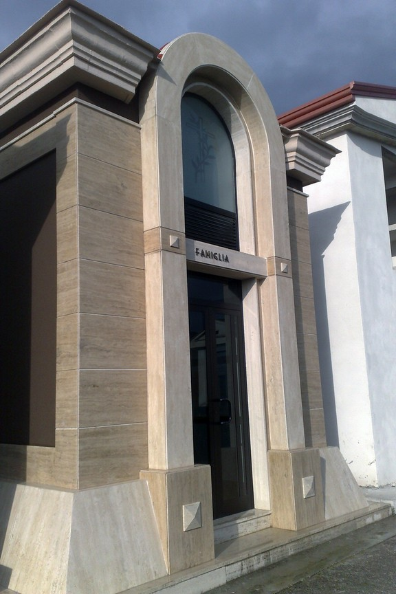

Arte funeraria a Caserta
Lavorazioni in pietra per cappelle gentilizie, realizzate con sobrietà e attenzione ai particolari.
Ci occupiamo di arte funeraria e della realizzazione di cappelle gentilizie in diverse varietà di pietra. Lavoriamo il Trani classico a vari spessori, il Travertino romano, la Basaltina e il Trani bocciardato.
Ogni lavorazione viene sviluppata a partire dal progetto, con attenzione alla forma, agli spessori e alla rifinitura dei materiali. Abbiamo inoltre lavorato al cimitero di Macerata Campania.
| Pos. | Lavoro | Pietre |
|---|---|---|
| 1 | Cappella gentilizia | Travertino romano |
| 2 | Cappella gentilizia, vista di scorcio | Travertino romano |
| 3 | Cappella, il frontone | Trani classico a vari spessori |
-

FUNCappella gentilizia, vista di scorcioTravertino romano -

FUNCappella, il frontoneTrani classico a vari spessori
Domande frequenti
Quali materiali utilizzate per le cappelle gentilizie?
Lavoriamo Trani classico a vari spessori, Travertino romano, Basaltina e Trani bocciardato.
Avete realizzato lavori nel cimitero di Macerata Campania?
Sì, Euromarmisud ha eseguito lavorazioni presso il cimitero di Macerata Campania.
Le altre tavole
- CAMCamini in marmoCamini in marmo e pietra, lavorati con cura nei dettagli e nelle finiture, a partire dal progetto.
- PAVPavimenti in marmoPavimenti in marmo e intarsi policromi, con disegni che prendono forma attraverso l'accostamento delle pietre.
- SCAScale in marmoScale in marmo con bordature e accostamenti di pietre diverse, lavorate nel laboratorio Euromarmisud.
- PORPortali in pietraPortali in Trani classico, lavorati con finiture bocciardate e picconate e dettagli architettonici.
Passa in laboratorio
Per parlare del tuo progetto o conoscerci di persona, chiamaci allo 0823 693073 oppure passa in laboratorio a Macerata Campania. Ti accoglieremo con piacere.
- Telefono
- 0823 693073Cellulare 393 9235457
- Laboratorio
- Via Starzolella
81047 Macerata Campania (CE) - Orari
- Da confermare
- info@euromarmisud.it
- Fax
- 0823 776193
- Indicazioni
- Apri il percorso su Google Maps